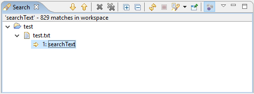

| Release | Resolved | Merged | Community Contributions |
| 3.23 June 28, 2017 |
21 bugs |
31 reviews |
Community contributions were
provided by Sopot Cela and Suzannah Smith.
Includes: Mylyn 3.23, Mylyn Builds 1.15, Mylyn Commons 3.23, Mylyn Context 3.23, Mylyn Reviews 2.14. Mylyn Tasks 3.23, Mylyn Versions 1.15. |
NOTE: Mylyn 3.23 requires Java 1.8 or later and supports Eclipse 4.6 and 4.7. See the download page for repository locations.
|
Task-focused Search |
The search view now allows you to focus results based on the active task. This will show all results in projects which are part of the active task's context.  |
|
|
|
|
Reply to Comment |
Replying to a comment on a task now quotes only the selected part of the comment. |